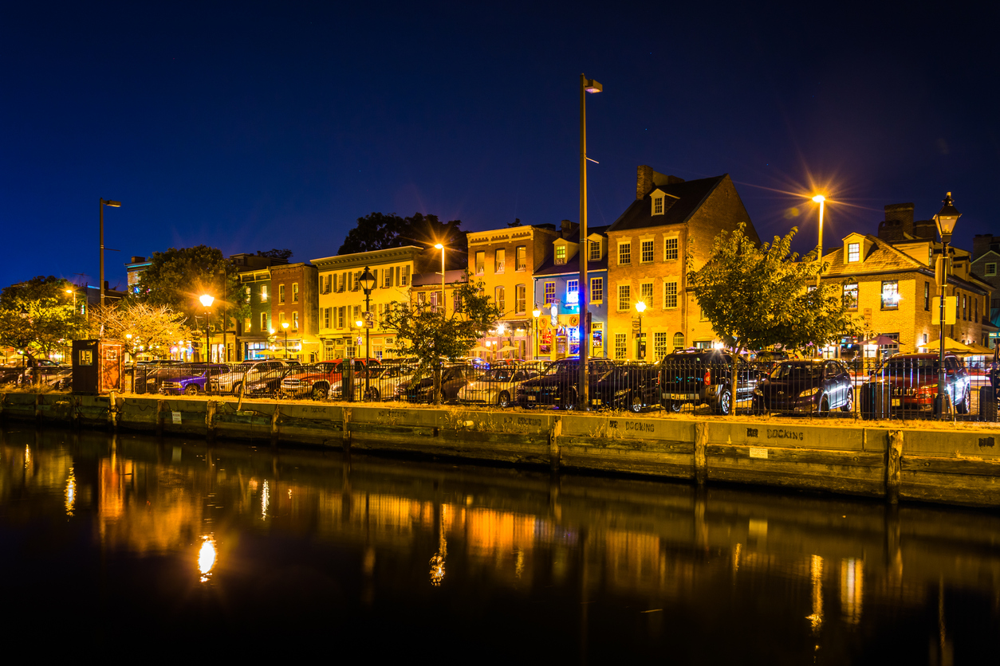
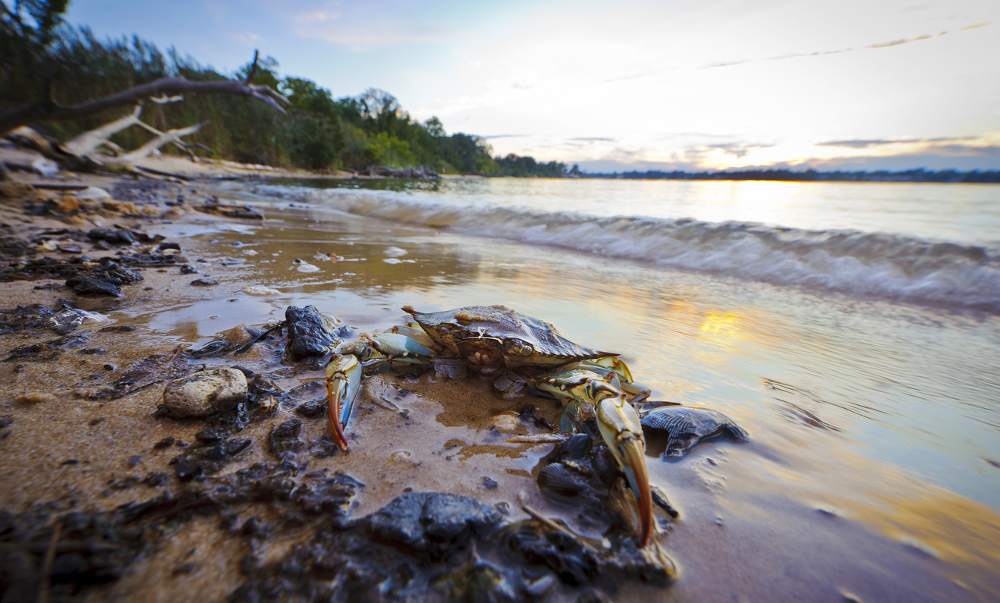
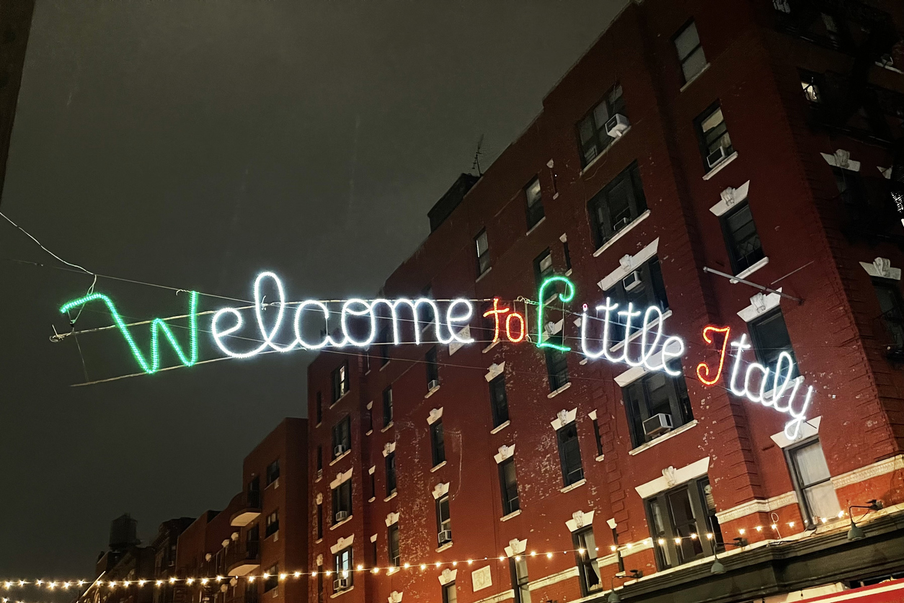
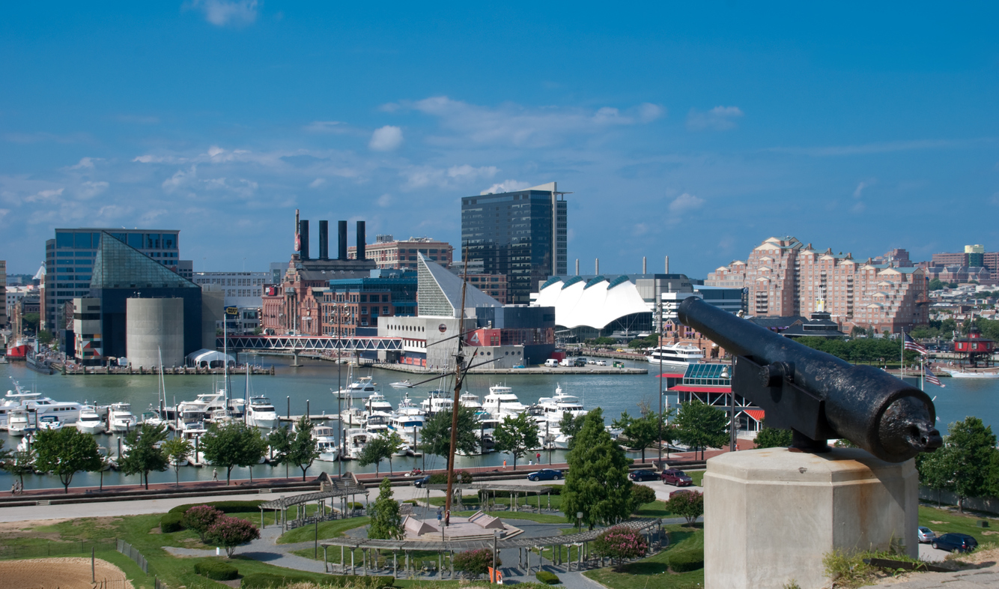

Our Tours

Fells Point Flavor Frenzy
A bite-sized Baltimore bliss that takes you through the best spots in Fells Point.
From $85
See More DetailsAnnapolis Appetites
Explore Annapolis while sampling dishes from historic restaurants.
From $90
See More Details

Crab Creek Crawl
Dive into the culinary history of Chesapeake Bay with this crab-centric tour.
From $83
See More Details
Harbor Hush Puppy Hop
Battered bites by the bay, featuring crispy seafood delights.
From $75
See More Details

Little Italy Lunar Bites
One small step for ham, one giant leap for prosciutto-kind.
From $92
See More Details

Federal Hill Foodie Frontier
Biting off more than you can chew, in the best way.
From $88
See More Details